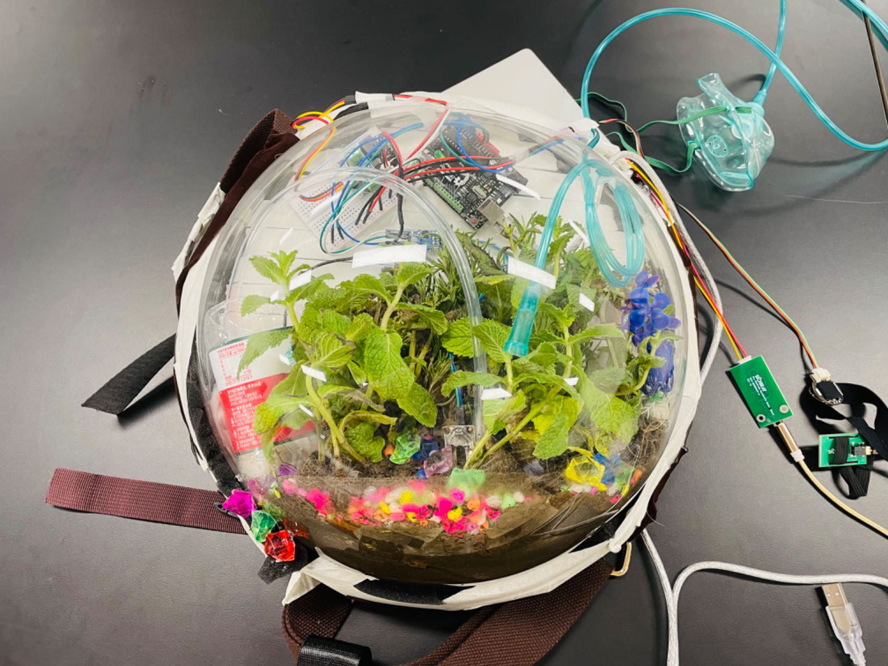
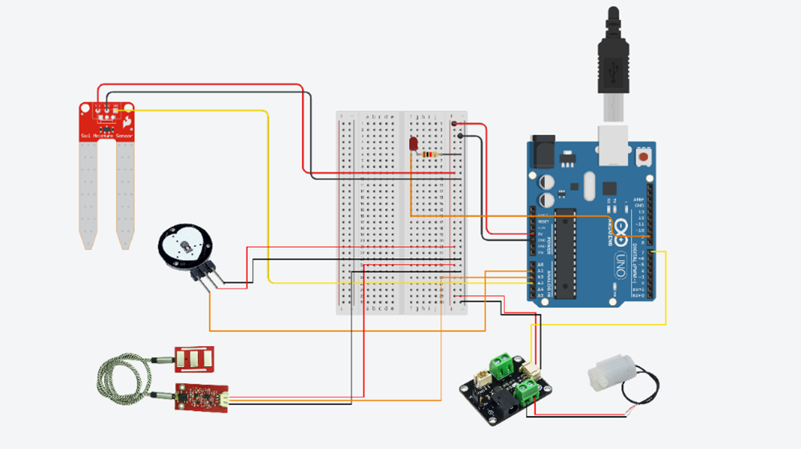
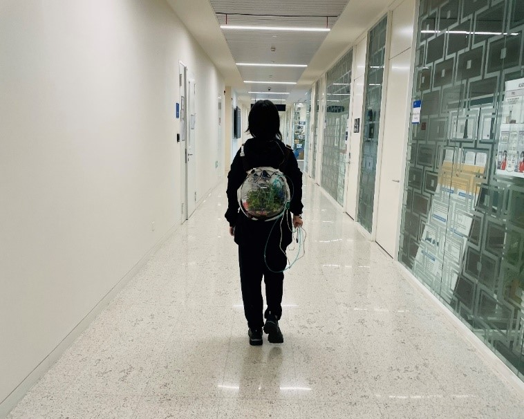

Project Overview
This project explores the interrelationship between humans and nature, emphasizing the impact of human activities on the environment and ecosystems. It aims to design a wearable device that helps users understand their impact on nature.
1. Prototype 1
Software Technology Review
Sensor Design: Heart rate sensors, EMG sensors, and plant moisture sensors collect user physiological data and monitor plant growth.
Data Collection: These sensors enable real-time monitoring and analysis of user interactions with plants.
User Interface Code: Developed using Processing, the interface displays real-time data and allows interaction.
1. Prototype 1
Software Technology Review
Sensor Design: Heart rate sensors, EMG sensors, and plant moisture sensors collect user physiological data and monitor plant growth.
Data Collection: These sensors enable real-time monitoring and analysis of user interactions with plants.
User Interface Code: Developed using Processing, the interface displays real-time data and allows interaction.
Connecting the Sensors
Designed a connection scheme using Arduino to ensure the device operates correctly, with serial communication facilitating data exchange between the device and the computer.
2. Hardware Design
The device uses a backpack-style wearable design. A transparent fish tank serves as the plant growth environment, integrating electronics for an enhanced experience.
3. Prototype 2 (Final Prototype)
Hardware Components
Includes heart rate, EMG, moisture sensors, Arduino microcontroller, water pump, and LED indicators for feedback.
Software Components
Programs sensor data and creates an intuitive interface using Arduino IDE.
User Interaction
Provides installation steps and real-time feedback mechanisms on plant growth, helping users operate the device easily.
This is how the sensor is connected to the motherboard.
Safety and Ergonomics
Design considers user safety, comfort, and usability.
User Feedback
Collects feedback to improve ease of use and practicality. Improvements were made based on feedback to optimize device design.
Conclusion
This project aims to raise awareness about the environment by fostering understanding and protection of nature. It encourages users to reflect on their behaviors' impact on the environment.
Future Improvements
- Address mobility limitations by exploring wireless connections.
- Enhance sensor accuracy for reliable data.
- Improve the user interface with more visual elements for better user experience.
Thank you for visiting my page! Feel free to reach out with any questions or to connect.
Artist name: Muxi Chen
Email: mc796@duke.edu
© 2024 All rights reserved